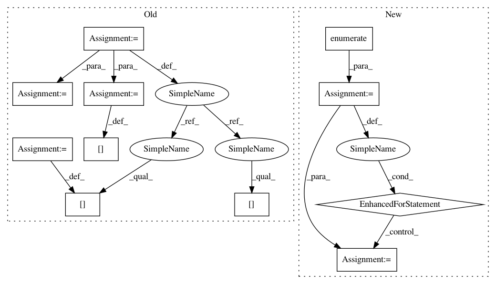

624d14284e35d6ce9c371c39f7e387002ccf4913,onnx_coreml/converter.py,,convert,#Any#Any#Any#Any#Any#Any#Any#Any#Any#Any#,248
Before Change
bias = node.attrs.get("bias", [0,0,0])
if not (len(bias) == 1 or len(bias) == 3):
continue
bias_r_g_b_gray = [0,0,0,0]
if len(bias) == 1:
bias_r_g_b_gray[3] = bias[0]
else:
bias_r_g_b_gray[:3] = bias
if inp_name not in image_input_names:
image_input_names.append(inp_name) // type: ignore
preprocessing_args["is_bgr"] = {inp_name: False}
preprocessing_args["red_bias"] = {inp_name: bias_r_g_b_gray[0]}
preprocessing_args["green_bias"] = {inp_name: bias_r_g_b_gray[1]}
preprocessing_args["blue_bias"] = {inp_name: bias_r_g_b_gray[2]}
preprocessing_args["gray_bias"] = {inp_name: bias_r_g_b_gray[3]}
preprocessing_args["image_scale"] = {inp_name: scale}
After Change
else:
preprocessing_args["image_scale"] = {inp_name: scale}
if len(bias) == 3:
for i, color in enumerate(["red", "green", "blue"]):
if color + "_bias" in preprocessing_args:
preprocessing_args[color + "_bias"][inp_name] = bias[i]
else:
preprocessing_args[color + "_bias"] = {inp_name: bias[i]}
else:
if "gray_bias" in preprocessing_args:
preprocessing_args["gray_bias"][inp_name] = bias[0]
else:
In pattern: SUPERPATTERN
Frequency: 3
Non-data size: 11
Instances
Project Name: onnx/onnx-coreml
Commit Name: 624d14284e35d6ce9c371c39f7e387002ccf4913
Time: 2018-08-25
Author: aseem.elec@gmail.com
File Name: onnx_coreml/converter.py
Class Name:
Method Name: convert
Project Name: onnx/onnx-coreml
Commit Name: 624d14284e35d6ce9c371c39f7e387002ccf4913
Time: 2018-08-25
Author: aseem.elec@gmail.com
File Name: onnx_coreml/converter.py
Class Name:
Method Name: convert
Project Name: jonathf/chaospy
Commit Name: f47485cc4a21fb18564ede7ab0cc9001dbd0f1d9
Time: 2020-06-10
Author: jonathf@gmail.com
File Name: chaospy/descriptives/sensitivity/total.py
Class Name:
Method Name: Sens_t
Project Name: jonathf/chaospy
Commit Name: f47485cc4a21fb18564ede7ab0cc9001dbd0f1d9
Time: 2020-06-10
Author: jonathf@gmail.com
File Name: chaospy/descriptives/sensitivity/main.py
Class Name:
Method Name: Sens_m